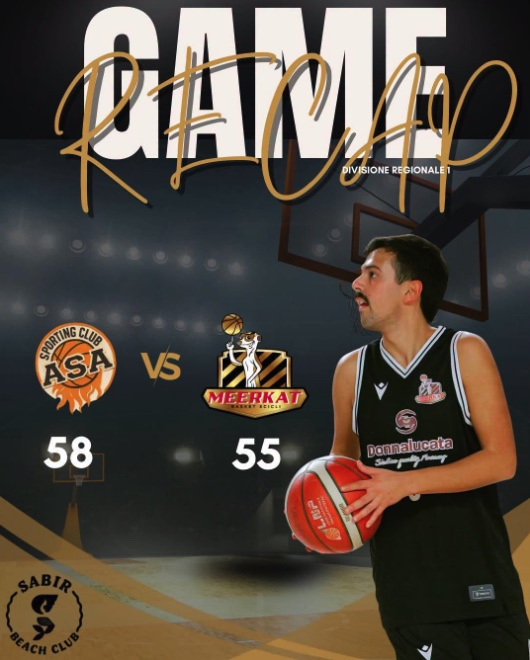

Esordio amaro nel campionato di DR1 per i suricati, che escono sconfitti di misura (58-55) dal palasport di Aci Sant'Antonio al termine di un finale al cardiopalma. Una serata resa ancora più difficile dall'infortunio al ginocchio di Miljkovic, costretto ad abbandonare il campo quasi subito.
L'inizio di gara vede i padroni di casa partire con la marcia giusta, imponendo subito il proprio ritmo e chiudendo il primo quarto sul 20-12. Nel secondo periodo i catanesi spingono fino a toccare il massimo vantaggio di +15, ma gli uomini di coach Lonatica rimangono agganciati al match grazie alle giocate di D'Onofrio e Conti.
La svolta arriva nel terzo quarto, quando i bianconeri mettono in campo una straordinaria reazione. Con un travolgente parziale di 13-0 gli ospiti riagganciano la parità sul 36-36, per poi allungare fino al +7 (50-43), trascinati da un incontenibile Abadia.
La mancanza di cinismo e alcuni errori banali al tiro non consentono però alla Meerkat di allungare ulteriormente e chiudere la partita tra la fine del terzo e l'inizio del quarto periodo.
Nell'ultimo e decisivo quarto i padroni di casa riescono così a ricompattarsi: un parziale di 10-5 e il controsorpasso firmato a 9 minuti dal termine indirizzano l'inerzia della sfida. Nonostante il tentativo finale guidato da D'Onofrio e Conti, gli sciclitani non trovano la stoccata vincente e la vittoria va agli etnei per 58-55.
Non c'è però tempo per demoralizzarsi: la formazione sciclitana avrà subito la possibilità di rifarsi mercoledì 21 ottobre nella gara di recupero contro Priolo.
Conti 19, Abadia 15, D'Onofrio 13, Lonatica 8, Miljkovic, Giannone, Manenti, Statello ne, Nicoscia ne.